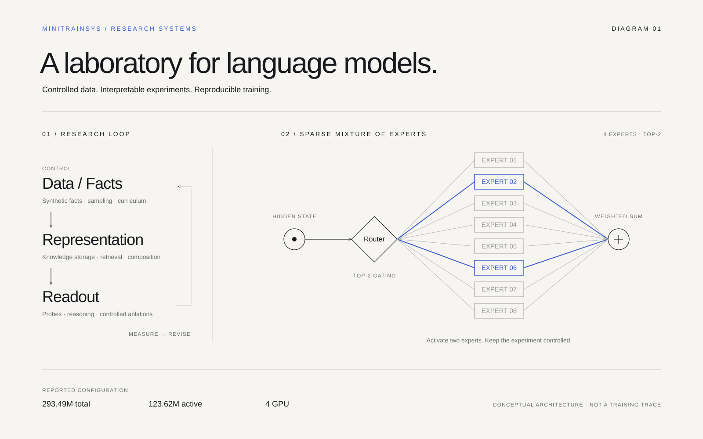
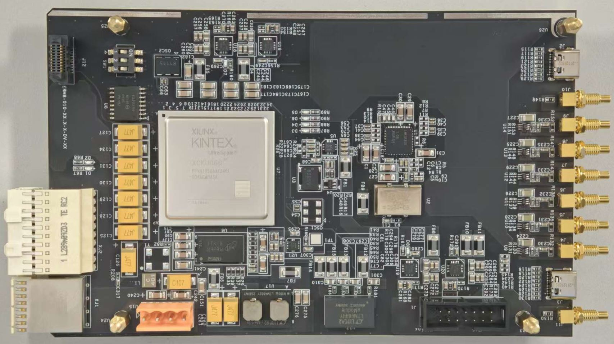

先理解，再优化Understand before optimizing
追踪数据如何成为知识，区分记忆、读出与推理；把模型行为连接到内部计算，而非停留在事后解释。Trace how data becomes knowledge. Distinguish memorization, retrieval, and reasoning, and connect behavior to internal computation.
崔翟斌Zhaibin Cui / 清华大学 · 交叉信息研究院Tsinghua University · IIIS
理解语言模型，从内部机制到真实价值。我关注模型学到了什么、知识在哪里表征，以及它如何成为推理与计算。Understanding language models—from internal mechanisms to real-world value. What do models learn, where is it represented, and how does it become computation?
我是崔翟斌，清华大学交叉信息研究院博士研究生，目前在 MiniMax 从事预训练算法研究。我希望把大模型的黑箱行为，转化为关于数据、表征、推理和架构的具体问题，再用实验找到能够跨模型、跨尺度成立的解释。I’m Zhaibin Cui, a Ph.D. candidate at Tsinghua IIIS, currently working on pretraining algorithms at MiniMax. I turn black-box model behavior into concrete questions about data, representations, reasoning, and architecture—and look for explanations that hold across models and scales.
长期的实验物理训练，让我习惯拆解复杂系统、控制变量和追问因果。从量子系统的软硬件全栈，到从零构建训练框架与视觉模型，我喜欢深入底层，也擅长快速进入新问题，把想法推进到可验证的结果。Experimental physics taught me to decompose complex systems, isolate variables, and investigate causality. From the hardware–software stack of quantum systems to training frameworks and visual models, I enjoy working close to the fundamentals and building the means to investigate a new problem.
追踪数据如何成为知识，区分记忆、读出与推理；把模型行为连接到内部计算，而非停留在事后解释。Trace how data becomes knowledge. Distinguish memorization, retrieval, and reasoning, and connect behavior to internal computation.
保留对照、消融与失败案例，用可复现的测量检验机制，并关心结论在架构与规模变化后是否依然成立。Use controls, ablations, failures, and reproducible measurements to test a mechanism—and ask whether it survives changes in architecture and scale.
理解应当改变我们构造数据、训练模型和设计系统的方式，最终形成更强、更高效、更可预测的模型。Understanding should change how we construct data, train models, and design systems—toward more capable, efficient, and predictable models.
长期关注RESEARCH INFLUENCES Physics of Language Models ↗ · 苏剑林 / Scientific Spaces ↗ · 完整研究自述My research statement ↗
参与大规模 GPU 集群预训练，从数据策略、训练对照到能力评测，研究哪些结论能够跨模型尺度成立，并为后续训练选择提供实证依据。I contribute to pretraining on large GPU clusters, connecting data strategies, controlled training runs, and capability evaluation. I investigate which findings hold across model scales and use the evidence to inform subsequent training choices.
MiniMaxMiniMax ↗参与大规模 GPU 集群预训练与 Scaling Ladder / Law 研究，对比数据配方和训练配置的收敛特性、验证损失与下游能力，考察结论的跨尺度一致性。Contribute to large-scale GPU pretraining and scaling-ladder/law studies, comparing convergence, validation loss, and downstream capability under different data mixtures and training configurations, and examining consistency across scales.
参与预训练 Benchmark 与评测流程建设，使用 BPB 等评估方法，结合知识和推理任务开展 Checkpoint 评估、分域能力分析与数据配方比较。Contribute to pretraining benchmarks and evaluation workflows. Use methods including bits per byte alongside knowledge and reasoning tasks for checkpoint evaluation, domain-level capability analysis, and comparisons between data mixtures.
围绕 Document Packing、质量分层与数据混合开展对照实验，分析有效 Token 利用率、训练吞吐和模型效果；参与数据 Pipeline 开发与联调，将数据策略落实到可训练、可评估的实验。Run controlled studies of document packing, quality tiers, and data mixtures, analyzing effective-token utilization, training throughput, and model performance. Contribute to data-pipeline development and integration so data strategies can be tested through training and evaluation.
六个代表作，从预训练和视觉模型，到 Agent 工作流与精密物理系统。每一项都留下代码、实验或真实装置。Six projects, from pretraining and visual models to agent workflows and precision physics. Each is grounded in code, experiments, or a working instrument.
 ↗
↗原创功能示意 · GF-HarnessOriginal functional illustration · GF-Harness
基于既有 baseline 扩展，将跨模型会话交接、分层 Agent 协作与 Linux 研发工具整合进同一工作区，支持桌面与手机接续真实研究任务。Extended an existing baseline into a shared workspace for cross-model session handoff, hierarchical agent collaboration, and Linux research tools, with work continuing across desktop and mobile.

↗原创架构示意 · MiniTrainSysOriginal architecture illustration · MiniTrainSys ↗
独立搭建预训练框架，在相同显存预算下获得 2.201× 吞吐，并用受控 MoE 实验揭示事实呈现方式如何改变知识的可读出结构。Independently built a pretraining stack with 2.201× throughput at a matched memory budget, then used controlled MoE experiments to investigate how fact presentation changes knowledge readout.
 ↗
↗图像来源：PaGE 论文与项目展示Image: PaGE paper and project ↗
参与空间感知视觉交互、数据与蒸馏研究，使轻量 PaGE ViT-B 在三个凝视数据集的九项指标中，有七项超过论文采用的人类基线。Contributed to spatial visual interaction, data, and distillation in PaGE; the lightweight ViT-B exceeds the paper’s human baselines on seven of nine metrics across three gaze datasets.
从电路板到实验工具，让仪器协同工作From a circuit board to a scientific tool.
 ↗
↗本人设计的 PCB 与系统分层示意PCB designed by me, with an original system-layer illustration
独立完成 PCB 到统一协议与 API 的量子测控栈，接入数十台仪器，并将部分真实实验校准封装为可供 Agent 调用的工具。Independently built a quantum-control stack from PCBs to protocols and APIs, connecting dozens of instruments and exposing selected real-world calibration procedures as agent tools.

↗参与 FPGA/RISC-V 量子测控研发与实验集成，在合作前馈系统中实现 11.5 ps RMS 时间测量精度与约 800 ns 端到端前馈延迟。Contributed to FPGA/RISC-V quantum control and experimental integration; the collaborative feed-forward system achieves 11.5 ps RMS timing precision and approximately 800 ns end-to-end latency.
跨越公里的纠缠，来自对每一层的掌握Entanglement across kilometers.
 ↗
↗本人实验装置：显微物镜与真空光学接口My experimental apparatus: microscope objective and vacuum optical interface
主导公里级离子量子网络实验，在 1.2 km 光纤上实现 95.9 ± 1.5% 纠缠保真度，刷新当时长距离物质节点预报纠缠保真度纪录，并获 Phys.org 专题报道。Led kilometer-scale ion-network experiments, achieving 95.9 ± 1.5% fidelity over 1.2 km—a record at the time for heralded matter-node entanglement over extended fiber distances—and a feature in Phys.org.
相关成果发表于 PRL、Nature Communications、PRX、Science Advances 与 PRA；公里级高保真离子纠缠刷新当时相关纪录，并获媒体报道。Related work appears in PRL, Nature Communications, PRX, Science Advances, and PRA. The kilometer-scale high-fidelity ion-entanglement result set a record in its category at the time and received media coverage. 阅读报道Read the story ↗

真实离子阱实验的相机视场 · 清华大学Camera view from a real trapped-ion experiment · Tsinghua University
用明确的问题组织研究，再用实验、模型和系统给出证据。Start with a precise question. Build the experiment, model, or system that can answer it.
相同的事实，换一种组织方式，会学出怎样不同的模型？How can the same facts, presented differently, produce different model capabilities?
从工业预训练中的数据配方、Packing 与跨尺度评测，到合成数据上的受控实验，我研究数据的内容、组织方式和分布如何影响收敛、知识提取与下游能力，让数据选择有训练证据可依。From data mixtures, packing, and evaluation across model scales to controlled studies on synthetic corpora, I investigate how data content, presentation, and distribution affect convergence, knowledge retrieval, and downstream capability. The goal is to ground data choices in training evidence.
查看数据与知识学习实验Explore the knowledge-learning study模型记住了答案，为什么仍可能无法把它读出来？If a model has memorized an answer, why can it still fail to retrieve it?
围绕 Sparse MoE，把源文本记忆、隐藏状态读出与生成行为分开测量，结合冻结骨干探针、Token 干预与专家路由分析检验机制；进一步关注隐藏推理、错误识别与回退，以及层级结构的学习与泛化。In sparse MoEs, I measure source-text recall, hidden-state readout, and generation separately. Frozen-backbone probes, token interventions, and routing analysis help test mechanism hypotheses. My ongoing interests include hidden reasoning, error recognition and recovery, and hierarchical structure learning and generalization.
查看机制研究与在研问题Explore mechanisms and ongoing questions表征、上下文和工具，怎样共同支撑持续完成任务的能力？How can representations, context, and tools support work that continues beyond one response?
在 PaGE 中研究场景语义与局部视觉线索的空间交互，并通过数据构建与蒸馏保留轻量模型能力；在 GF-Harness 中组织跨模型上下文交接、Agent 协作和工具执行，探索从模型能力到实际研究任务的连接。In PaGE, I work on spatial interaction between scene semantics and local visual cues, using data curation and distillation to preserve capability in lightweight models. In GF-Harness, I connect cross-model context handoff, agent collaboration, and tool execution to practical research tasks.
查看视觉研究Explore the vision research持续阅读与研究启发RESEARCH INFLUENCES Physics of Language Models ↗ 苏剑林 · Scientific Spaces ↗
视觉智能、量子网络、量子存储与实时测控。逐项列出作者、发表状态和公开链接。Visual intelligence, quantum networks, quantum memory, and real-time control. Authors, publication status, and public links are listed individually.
没有匹配的论文。No matching publications.
 ZHAIBIN CUI
ZHAIBIN CUI我关注大模型如何从数据中形成知识、表征与推理能力，以及这些能力如何随架构和训练规模变化。在 MiniMax 参与大规模预训练研究，同时独立搭建 MiniTrainSys，把模型行为转化为受控实验；在 PaGE 中探索空间感知表征与蒸馏。实验物理训练让我习惯追问机制、拆解变量，也愿意深入实现，把一个想法推进到可复现的结果和可用的系统。I study how language models acquire knowledge, representations, and reasoning from data, and how those capabilities change with architecture and training scale. At MiniMax, I contribute to large-scale pretraining research. Independently, I built MiniTrainSys to turn model behavior into controlled experiments, and contributed to spatially aware representations and distillation in PaGE. Experimental physics shaped how I work: ask what drives a result, isolate the variables, and build what is needed to turn an idea into reproducible evidence and a useful system.
预训练算法研究 · 实习Pretraining research · Internship
博士研究生 · 模型训练与机制、视觉智能、量子信息Ph.D. candidate · Model training and mechanisms, visual intelligence, quantum information
物理学学士 · AI+X 项目 · 校优秀毕业生B.Sc. in Physics · AI+X program · Outstanding Graduate
清华之友—华为学者奖学金 · 清华大学校级实验室贡献奖 · 院级奖学金 · 中科大严济慈英才奖学金Huawei Scholar scholarship · Tsinghua laboratory-contribution award · Institute scholarships · USTC Yan Jici talent scholarship
欢迎交流大模型算法、预训练与数据、视觉表征、Agent 及跨学科研究。Open to conversations on language models, pretraining and data, visual representations, agents, and interdisciplinary research.